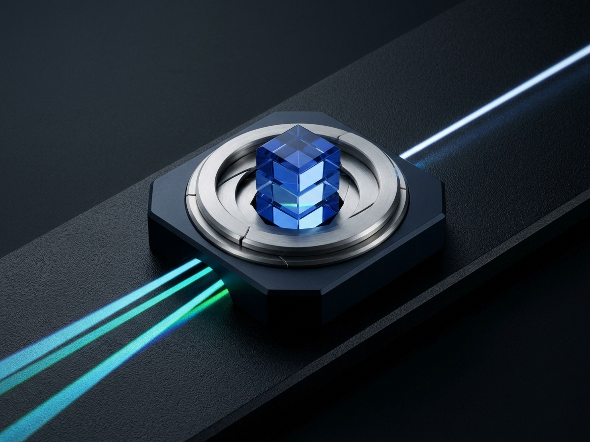

Pillar 1: Product vs project layer bifurcation
Distributable core libraries under harness/ never import from experimental pipelines (pipeline/), local scratchpads, or workspace drivers (ADR-014).
Live Electron trajectory inspection (:40623 ConnectRPC and :40624 playback), quarantined cleanroom reverse engineering (PSL-RE-001 with 15 agyis re subcommands and an 18-key obligation ledger), and zero-defect architectural fitness operations.
Built from externalized browser assets under harness/gui/assets/ (playback_shell.html, hud_styles.css, hud_context_bar.js, hud_header.js). Live overlays query ConnectRPC (port 40623) directly while headless offline playback runs on http://127.0.0.1:40624/ with a bounded 32-entry / 64 MB LRU cache.
xtc / ytc / ztc / Atc math for documentation. Production HUD sessions never bake static snapshots and always query live RPC or local playback state.
Active route: /c/9bbbcf1e (Root session, 2 child subagents attached)
xtc(segment, pxPerToken, 2px)
Sub-pixel clamping enforcing a minimum 2px clickable width for every non-zero token segment.
ytc(segments, capacity, width, rows)
Evaluates visual pixel budget and clamping inflation across candidate row counts.
ztc(segments, ..., maxRows=8)
Two-gate optimizer terminating when inflation <= 10% or marginal row gain < 2% width.
Atc(segments, capacity, width)
Multi-row continuous slice packer scaling overflow cleanly across proportional tracks.
Enforces a hard physical quarantine between binary inspection inside .dirtyroom/ and verified cleanroom specifications under docs/specs/**. Integrates rea@6.9.0 (255 MCP tools), headless Ghidra pre-analysis, direct-mount read-only acceleration (-noanalysis -readOnly), a persistent bridge supervisor daemon, and a sub-5ms SQLite decompiler query cache.
agyis re subcommands
rea@6.9.0 MCP tools

.dirtyroom/) separated by a deterministic verification plane from cleanroom specifications (docs/specs/**).agyis re command palette (all 15 subcommands from harness/commands/re.py)| Subcommand | Category | Key flags | Purpose |
|---|
Verified verbatim against _REVIEWED_OBLIGATION_KEYS in harness/cleanroom/obligation.py. Validated by agyis verify and agyis verify --spec. Top-level ledgers require exactly evidence_bundle (7 arrays: artifacts, captures, environments, providers, records, scenarios, unknowns), reviewed_obligations, and manifest (bindings, contradictions), with zero top-level $schema key permitted.
Continuous structural verification paired with zero-footprint SSH operations, opt-in delta synchronization, and deterministic workspace lifecycle hygiene.
Distributable core libraries under harness/ never import from experimental pipelines (pipeline/), local scratchpads, or workspace drivers (ADR-014).
Every internal module dependency forms a strict directed acyclic graph verified automatically on every agyis audit aff run.
HTML, CSS, JavaScript, and SQL schemas live under dedicated assets/ directories loaded via importlib.resources rather than multiline string monoliths.
Persistent runtime caches enforce explicit max-entry, byte, or TTL capacity limits (e.g., 32 entries / 64 MB trajectory cache, 300s auth cache).
| Domain | Command | Operational contract |
|---|---|---|
| Remote Ops | agyis remote exec <target> "<cmd>" |
Multiplexed OpenSSH ControlMaster execution with login-shell promotion |
| Remote Ops | agyis remote script <target> <file> [--stage] |
Zero-footprint stdin script streaming (or trap-cleaned staged run) |
| Remote Ops | agyis remote triage <target> |
Compact (<2KB) multi-component cloud, Coolify, PM2, and mesh health report |
| Remote Ops | agyis remote socket status|cleanup |
Inspect or cleanly prune active OpenSSH ControlMaster sockets |
| Sync & Auth | agyis auth / agyis sync |
GitHub PAT org check (300s cache) and opt-in delta push/pull with self-hosted OSS server/ |
| Sync Daemon | agyis sync --service install|status|start|stop |
Zero-sudo systemd user background telemetry replication service (ADR-030) |
| Fitness Gate | agyis audit aff |
Sub-0.25s structural fitness audit scoring 100.0/100 across all 4 pillars |
| Cache Hygiene | agyis clean --caches |
Invokes purge_build_caches() (.next, .turbo, node_modules/.cache) alongside checkpoint/worktree cleanup |
| Onboarding | agyis onboard --verify --commit [--rea|--no-verify|--pr] |
Branch-isolated repository onboarding, cache purge, verification gate, and atomic commit or PR delivery |
| Checkpoints | agyis checkpoint status|create|verify|prune |
Carrier-grade pre-compaction CID checkpoint capture and succession |
| Release & Ext | agyis ext / agyis changelog / agyis release-notes |
Antigravity extension diagnostics, changelog generation, and release notes synthesis |